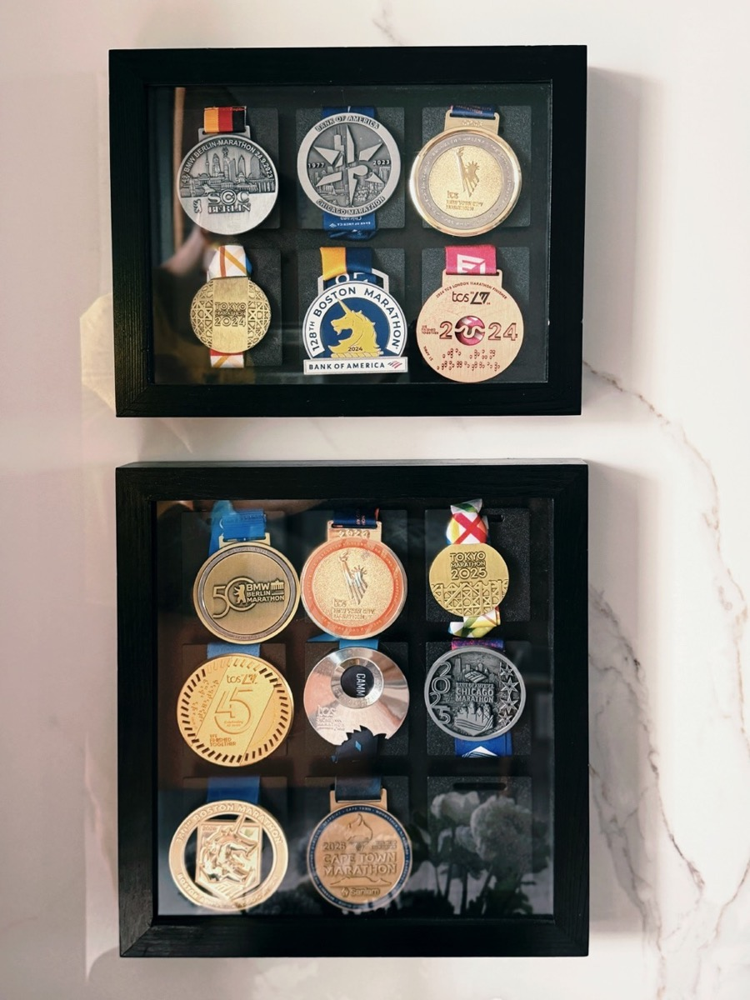
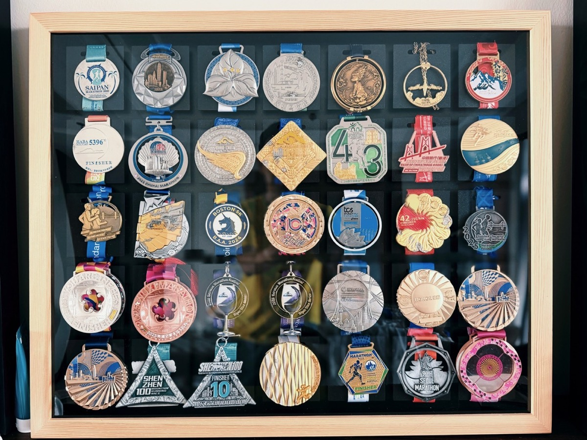

Marathon runner Ning Li
From a first run for weight loss to two rounds of the six World Marathon Majors and all eight global majors.
- Major marathon events
- 8
- Six-major rounds
- 2
- Marathons
- Nearly 50

Marathon milestones
Races, results and training as of November 2026.
- Major marathon eventsEight major events completed worldwide8
- Six-major roundsTwo complete rounds of the six majors2 rounds
- Full marathonsNearly 50 races completedNearly 50
- Personal bestSeoul, South Korea, March 20263:05:30
- Monthly distanceCurrent sustained training range350–450 km

From six majors to eight majors
I am a marathon enthusiast. I started running in 2016 to lose weight, progressing from 2 km, 5 km and 10 km to half marathons and full marathons. In March 2026, I ran a personal best of 3:05:30 in Seoul. I ran my first World Marathon Major in Berlin in September 2023, followed by Chicago in October, New York in November, Tokyo in March 2024, and Boston and London in April. In under seven months I became a first-round six-major finisher. Among runners in China who have completed one round of the majors, I ranked inside the top 500. After finishing the Boston Marathon on 15 April 2026, I completed a second round of the six majors in under three years. Then, on 25 May, at the Cape Town Marathon, which became the eighth global major, I was among the first 117 Chinese runners to complete all eight majors, ranking 44th among Chinese runners and 38th among men.

Training rhythm
The first run in 2016 was two kilometres. In 2026, Seoul brought a 3:05:30 marathon. I now maintain 350–450 kilometres a month.